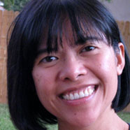

About Me
Contact me: 816-948-1282. OR marjorie@greatgreencontent.com
I'm a graduate of Harvard College and have an MBA from the Sloan School at MIT. My business career spanned software development, management consulting, and training. My favorite job was writing and summarizing content for internal websites for a Fortune 500 company.
Throughout my career I found that clear, concise writing was essential to success. Whether writing a business proposal that sells, a case study that generates sales leads, or a document summary that saves a high-priced consultant some time, the connection between content and profit has always been clear.
In 2011, I launched my own business to combine my love of creating content with a focus on greener businesses and organizations. By “greener” I don’t mean that all my clients are like Whole Foods or Seventh Generation. But according to a study by KPMG, some 93% of the world’s largest companies conduct green initiatives and report on them.
I work with organizations that have begun their journey towards more sustainable practices, to help amplify and celebrate those efforts. And I “walk the talk.” In 2012 I received Platinum Certification from the Green Business Bureau. In 2013 I earned “Bronze” status from Green America.
Why Choose Me?
There are a lot of content and copywriters out there. (I work with some of them!) But I'm the perfect solution for you when you need:
A Business Maven. I write for
business only. But I define “business” broadly to include non-profits,
educational institutions and health organizations, as well as traditional for-profit businesses.
An Experienced Online Writer. I apply principles from the usability experts at Nielsen Norman Group to create effective copy for the web. As a Copyblogger affiliate, I stay plugged in to the art and science behind content marketing.
A Green Business Specialist. You get a content and copywriter steeped in green business and sustainability initiatives. I bring my subject matter expertise to you. If your organization is transitioning to greener practices, you support the growth of a greener economy by working with me.
A Collaborative Partner. When your business gets more notice, draws more customers, and makes more money - that makes my day.